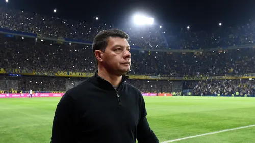
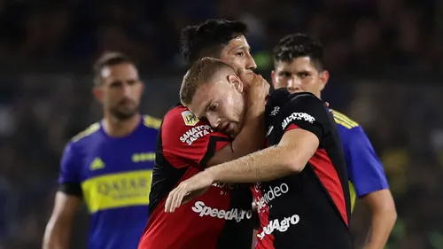
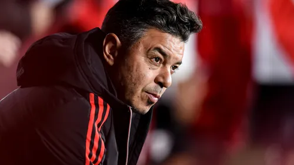
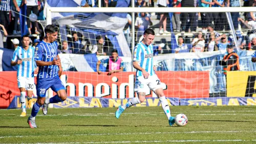

Visiblemente cansado por el intenso arranque, el Xeneize cayó en Santiago del Estero y volvió a perder después de 10 partidos.

La racha de Battaglia se cortó en 10

Beltrán se plantó y presiona a Colón para volver

Gallardo recupera a dos de tres internacionales

Racing y una derrota con aroma a fin de ciclo